Consistência em uma transição tecnológica
Genesis é o Design System do Banco Bmg, responsável por padronizar componentes, tokens e diretrizes para o App em Flutter.
Alguns dados numéricos e métricas foram ajustados ou anonimizados para preservar confidencialidade, sem alterar o contexto ou os aprendizados do projeto.

1 ano e 5 meses
Contexto
O Banco Bmg estava em processo de migração do seu aplicativo, saindo de tecnologia nativa para Flutter, e também passava a focar em um novo perfil de usuário: o público 50+.
Esse movimento exigia mais do que uma atualização tecnológica, era necessário garantir consistência real entre times, produtos e entregas. Nesse contexto, surgiu uma grande oportunidade para que o Design System Genesis, também evoluísse junto com essa transformação.
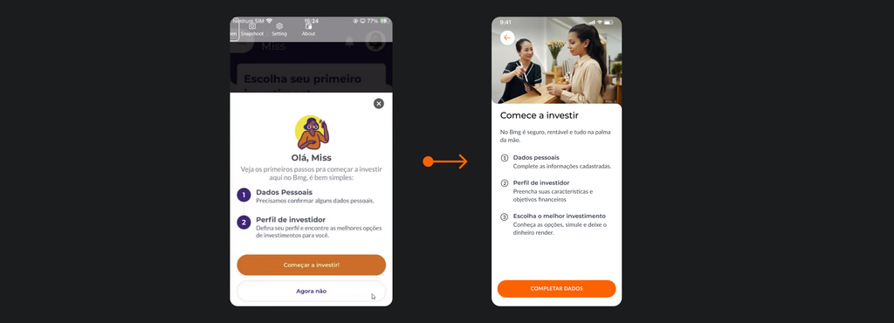
Problema
A migração para Flutter trouxe uma oportunidade clara, mas também um risco. Sem um Design System bem estruturado, cada squad continuaria resolvendo os mesmos problemas de formas diferentes.
O cenário era crítico: construir no nativo custava quase o dobro em tempo e custo comparado ao Flutter. Sem governança clara, a biblioteca poderia crescer de forma desordenada.
Público 50+
O Banco passou a considerar com mais atenção o público com idade a partir de 50 anos, muitas vezes com menor familiaridade digital. O Design System teve papel direto em garantir que essas decisões fossem consistentes em todos os produtos.
Dois princípios guiaram essa evolução:
Simples, transparente e fácil de usar.
Títulos claros e acionáveis, com poucas decisões por tela e sem distrações visuais, reduzindo a carga cognitiva e tornando a navegação mais previsível.
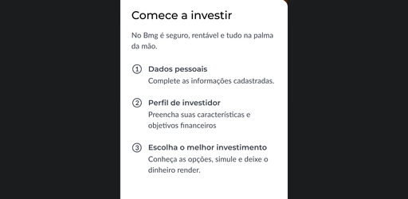
Acessível e adaptável ao cliente.
Conformidade com WCAG nível AA e diretrizes do Bacen, com tipografia escalável em três níveis (100%, 125% e 150%) para melhor acessibilidade.
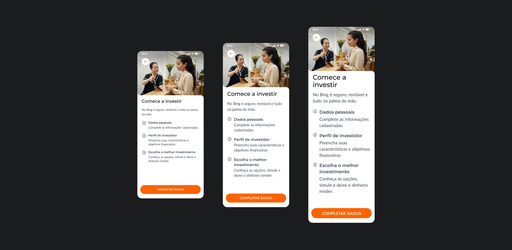
Testes com clientes.
Sessões presenciais de teste de usabilidade com clientes do Banco, observando como usam o app no celular na prática.
*Rostos e informações internas desfocados para preservar a privacidade dos participantes.
Design Force
O time realizou Design Forces, sessões colaborativas para definir e alinhar padrões do produto. Isso evoluiu a Genesis com componentes mais acessíveis, simples e consistentes.
Algumas das decisões tomadas foram:
Tipografia
Criamos uma tipografia uppercase (caixa alta), aplicada principalmente em botões, para aumentar a legibilidade e facilitar o reconhecimento de ações pelo público 50+.
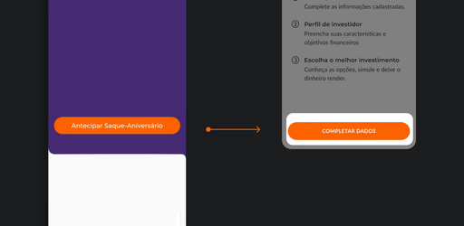
Ícones
Definimos tokens de cor específicos para ícones conforme seu comportamento: ícones ilustrativos ou clicáveis.
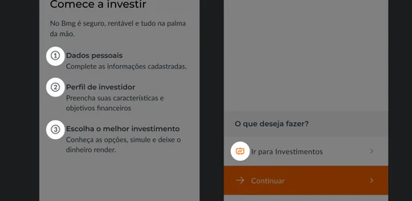
Também foram definidas decisões sobre padrões de telas, garantindo consistência estrutural e previsibilidade na navegação do aplicativo, como exemplo:
Welcome Screen
Antes havia 5 variações de Welcome Screen no app. Padronizamos em 2 modelos, focados em apresentar o produto no primeiro acesso de forma clara, resumida e fácil de entender.
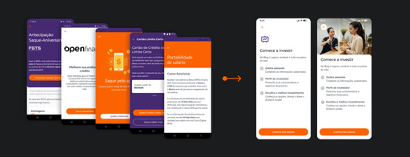
Tela de feedback
Havia 5 variações de telas de feedback para comunicar resultados de ações no app. Reduzimos para 2 modelos consistentes, tornando as respostas mais claras e previsíveis.
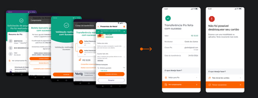
Minha atuação
Minha atuação girou em torno de quatro frentes que garantiam qualidade e consistência do início ao fim de cada entrega.
Um time enxuto (2 designers e 2 desenvolvedores) responsável por atender 15 designers distribuídos em diferentes frentes do app.
Componentes
A Genesis possuía muitos componentes em código, porém aproximadamente 30% estavam em uso ativo. A maior parte desses já estava adaptada às novas regras e atendia aos critérios de acessibilidade.
Mais do que criar, meu trabalho foi garantir que cada componente tivesse estados bem definidos, nomenclatura consistente, tokens aplicados corretamente e documentação que outros times conseguissem usar sem depender do time de DS e alinhados às decisões tomadas nas Design Forces.
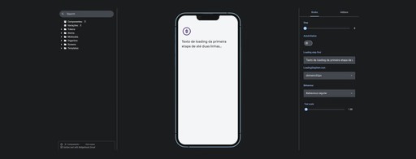
DS Review
Estruturei e conduzi o DS Review, etapa obrigatória antes do handoff com o dev. Nesse processo, o time de Product Design trazia as telas no Figma e revisávamos juntos se os componentes do Genesis estavam sendo aplicados corretamente e se as decisões das Design Forces estavam sendo respeitadas.
Realizei mais de 50 revisões, garantindo aderência aos padrões e avaliando a necessidade de novos componentes, ícones ou tokens. Esse processo reduziu significativamente o risco de o desenvolvimento implementar algo fora do esperado, evitando retrabalho e tornando o QA mais ágil e preciso.
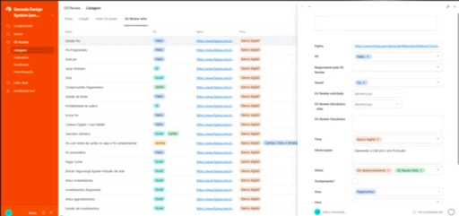
Documentação
Criei guidelines de uso para os componentes e padrões definidos nas Design Forces, detalhando regras, tokens, estados e acessibilidade. O objetivo foi dar autonomia aos designers e garantir alinhamento claro com desenvolvedores na implementação.
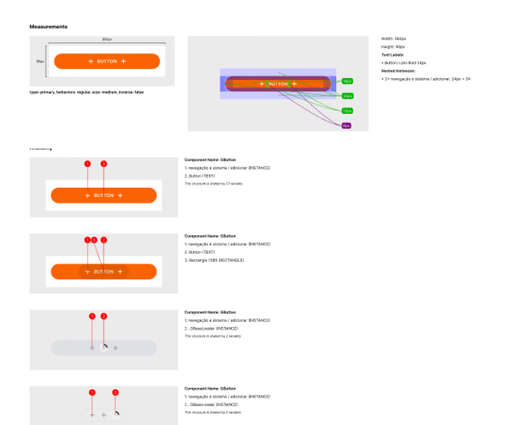
QA
O QA fechava o ciclo: validação prévia ao processo de deploy e pré-produção, garantindo que o que foi desenvolvido correspondia exatamente ao que foi projetado, evitando divergências e retrabalho.
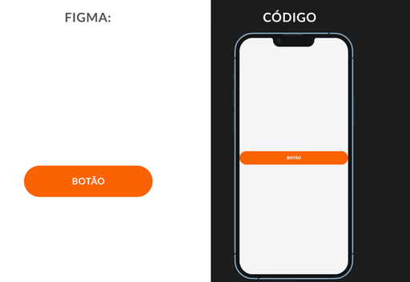
Resultados
Eficiência por entrega. O uso de componentes da Genesis gerou um ganho expressivo de tempo.
Economia em relação a construir do zero, porque cada componente já vem com design validado, documentação pronta e implementação testada.
Desenvolver um componente no nativo custava quase o dobro do que no Flutter.
Com o Design System bem estruturado, o Flutter se tornou não só uma escolha tecnológica, mas uma decisão financeira.
A equipe com quem trabalhei na Genesis
“Sempre acessível, prestativa, super ágil, parceira demais e, acima de tudo, uma simpatia em pessoa. Sempre trouxe leveza pros nossos papos e fez tudo parecer mais fácil.”
“No começo, parecia mais na sua, mas quando se soltou, virou um furacão de ideias e disposição! Sempre pronta pra ajudar, topar as paradas e fazer acontecer. Foi lindo ver tua evolução.”
O que aprendi
Essa experiência mudou minha forma de ver Design System. Antes eu entendia como biblioteca de componentes. Hoje entendo Design System como um produto interno, com usuários reais, desafios de adoção e métricas de impacto que vão além da interface.
O maior desafio não foi criar os componentes, mas garantir que as decisões não se perdessem ao longo do projeto e encontrar a melhor forma de documentar tudo de maneira clara, acessível e fácil de manter.

Sistema de vendas para maquininhas
Solução de PDV desenvolvida para rodar diretamente em maquininhas Android, centralizando pedidos e pagamentos em um único dispositivo.

Estruturação da Jornada do FIDC
De processos manuais e fragmentados a uma visão estruturada e escalável

App BASF Agro
O BASF Agro é o aplicativo da BASF para quem trabalha no campo, com informações técnicas sobre cultivos, pragas e produtos. Na ioasys, atuei no redesign do app.

Central de Monitoramento
Central de Monitoramento é um projeto de retrofit que estrutura a experiência visual e informacional de uma central de monitoramento.

© 2026 XL Borges. Todos os direitos reservados · CNPJ 67.998.140/0001-71